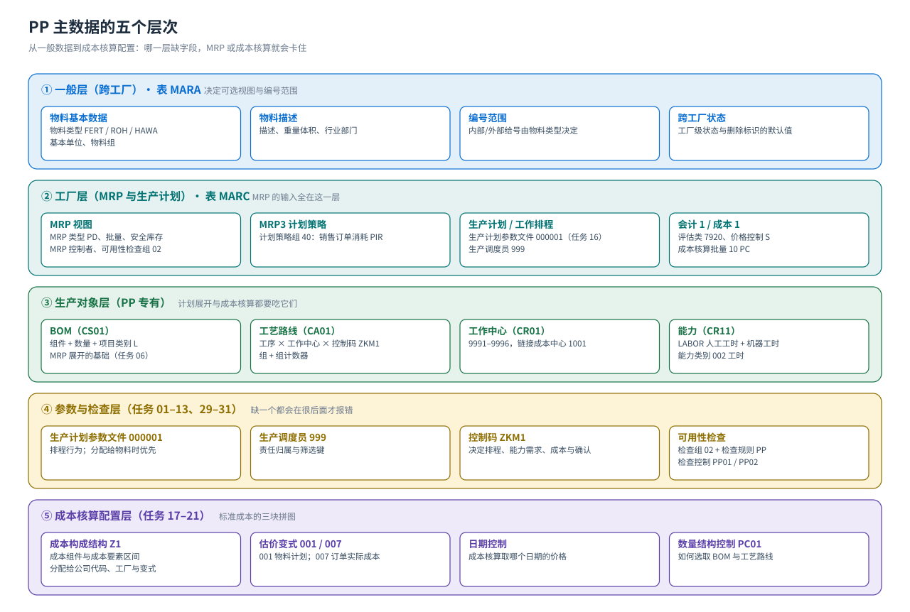

主数据
物料 MRP 视图 · BOM · 工艺路线 · 工作中心 · 能力 · 计划策略组
PP 的主数据是「一物四件套」：物料主数据（MRP 视图与生产计划视图）、BOM（要什么料，MRP 展开的基础）、工艺路线 + 工作中心（怎么做，谁来做）、能力（做多久）。搞清它们的组织层与相互引用，后面的流程才不会卡住。
主数据分层一张图
{kind=link}

① 物料主数据：PP 要看哪些视图
| 视图 | 组织层 | PP 关心的字段（教材值） | 影响什么 |
|---|---|---|---|
| 基本数据 1/2 | 跨工厂 | 物料类型 FERT（产成品）/ ROH（原材料）/ HAWA（贸易商品）、物料组、基本单位 | 决定可选视图与编号范围 |
| MRP 1–4 | 工厂 | MRP 类型（PD = MRP）、MRP 控制者、批量、安全库存、计划边际码、可用性检查组 02、生产调度员 999 | MRP 运行是否产生需求、什么时候产生、检查库存的方式 |
| MRP 3（计划策略） | 工厂 | 计划策略组 40（任务 32 维护） | 销售订单会不会消耗独立需求 —— SD 与 PP 最重要的集成参数 |
| 生产计划 / 工作排程 | 工厂 | 生产计划参数文件、生产调度员（任务 16 用 MMF1 补维护） | 生产订单创建时的排程行为。教材原文：参数文件分配给物料时优先级高于分配给调度员 |
| 会计 1 / 成本 1 | 工厂（评估范围） | 评估类 7920（产成品）、价格控制 S、标准价格 | 自动记账找哪个存货科目；标准价决定订单产出与差异怎么算 |
为什么任务 16 要单独补一次物料主数据教材 PP 任务 16 的原话是：「MM 中，我们没有维护产成品的生产计划视图」。主数据是分模块、分视图维护的：MM 教材建了采购/MRP/会计视图，PP 教材补生产计划视图（
MMF1，物料类型 FERT 的专用入口）。在自己系统里可以用 MM02 直接选中这个视图维护。② BOM（物料清单，CS01）
教材原话：物料需求计划 MRP 最主要的基础是 BOM
任务 06 用 CS01 给产成品建 BOM：抬头填物料与工厂，项目概览里逐行填组件物料 + 数量 + 项目类别。教材的做法是「项目类别都用 L（库存项目）」。教材画面里 F999-100 铸钢泵 170-230 的组件是罩壳、金属片、飞轮、管轴、支撑架。
BOM 的两个方向：正向看「一个产成品要哪些料」（CS03 显示）；反向查「这个料被谁用」（CS15 所用处清单，任务 07 —— 教材用它确认罩壳被用于 F999-100 的生产）。
| 字段 / 概念 | 教材值 | 说明 |
|---|---|---|
| BOM 用途 Usage | 1（生产） | 决定这个 BOM 用于生产订单还是成本核算 |
| 替代 BOM / 版本 | （教材未演示） | 同一个物料多套 BOM 时按用途+替代序号区分 |
| 组件数量与单位 | 画面录入 | MRP 按 BOM 用量展开非独立需求 |
| 项目类别 Item Category | L 库存项目 | 决定该行是否产生库存需求与预留 |
| 有效期 | 教材未特意维护 | BOM 有日期区间；成本核算按成本核算日期选取 |
③ 工艺路线（CA01）：怎么做、在哪做
| 要素 | 教材值 / 演示 | 含义 |
|---|---|---|
| 组 + 组计数器 | 工艺路线靠「组编码 + 组计数器」两者编号 | 组计数器可以让一个产品有多条工艺路线（例如按批量大小）；教材只维护一条 |
| 工序 Operations | 0010 准备罩壳和金属片 · 0020 切割金属片 · 0030 预装配 · 0040 装配 · 0050 检验和交付 | 每道工序挂一个工作中心、一个控制码 ZKM1，并带标准值（准备/机器/人工工时） |
| 工作中心 | 9991 物料准备 · 9992 切割 · 9994 预装配 · 9995 装配 · 9996 校验和交付 | 工序在哪个资源上执行；决定能力需求与作业成本 |
| 顺序 Sequences / 并行 | 标准顺序 + 并行顺序 0010 9993 油漆罩壳 | 「油漆罩壳」与「切割金属片」并行执行；分录工序与返回工序（返回 0030）由画面定义 |
| 状态 Status | 教材画面显示状态 4（可进行各项业务） | 工艺路线的可执行状态；未释放的工艺路线不能在订单里用 |
| 组件分配 Component Allocation | 把 BOM 组件分配到具体工序（任务 14 后半段） | 决定「哪道工序领哪几种料」，也决定倒冲在哪个工序发生 |
| 拆分 Split | 任务 15：在「所需分解」前打勾后保存 | 把一个工序的数量分到几条并行线执行 |
任务 14 里的一条重要提示教材在维护工艺路线时提示「由于前序未将 LAB 与工作中心关联，此处会提示」—— 意思是能力（
LABOR）当时还没分配给工作中心。这类跨任务的前后依赖是 PP 配置最容易漏的地方：配置任务之间不是彼此独立的，漏一步往往在很后面才报警。④ 工作中心（CR01）与能力（CR11）
| 要素 | 教材值 | 说明 |
|---|---|---|
| 工作中心编号/名称 | 9991 物料准备 … 9996 校验和交付 | 工厂 P999 下；人工工时 4 个（9991/9992/9995/9996）+ 机器工时 2 个（9993 油漆/9994 预装配） |
| 类别 Category | 按人工工时 / 机器工时划分 | 决定可用的能力类别与标准值字段 |
| 负责人 Person Responsible | 颐宁工作中心负责人（只定义 1 个） | 任务 08 |
| 缺省控制码 | ZKM1；计量单位 MIN 分 | 任务 12 步骤 05：ZKM1 是之前定义的缺省控制码，MIN 指分钟 |
| 能力 Capacity | LABOR 颐宁人工工时能力（能力类别 002 工时）+ 机器工时能力 | 工厂层统一核算，再分配给各工作中心；单项能力数量、能力利用率（教材提示：100 = 100% 可有效利用） |
| 公式 Formulas | SAP001 生产:准备时间 · SAP003 生产:工时 · SAP005/006/007 作业需求 | 决定标准值如何换算成时间与能力需求 |
| 成本核算页 | 成本控制范围 C999、成本中心 1001 Workshops | 作业类型（准备/机器/工时）→ 作业价格由 CO 的 KP26 维护 |
教材任务 12 的「卡点」教材在给工作中心维护成本核算页时明说：因为 CO 模块未完成 KP26（作业类型价格），此处无法继续。这不是教材写错，而是真实项目里的分工：工作中心由 PP 建，作业价格由 CO 维护，两边不做完就取不到作业成本。学到这里要能指出「缺哪一步」。
⑤ 计划策略组（Planning Strategy Group，任务 32）
| 策略 | 教材说明 | 结果 |
|---|---|---|
40（按库存生产，教材用于 F999-100） | 生产计划的依据是计划部门维护的独立需求计划；但销售订单对计划仍有影响 ——销售订单会消耗独立需求；当销售订单超过计划量时，多出的部分会增加生产计划 | 计划以 PIR 为主，销售订单只做消耗 |
| （教材未演示）策略 10 / 20 / 30 / 50 等 | 标准策略里 10 是按库存生产（PIR 不消耗）、20 是按单生产、30 是 PIR 与销售订单并行按最大值、50 是无最终装配的计划 | 换到自己的系统先看物料 MRP3 视图的策略组，再用 OPPS 查策略定义 |
- 计划策略组在物料主数据 MRP3 视图维护，是「销售和生产在计划上怎么衔接」的开关。
- 教材任务 32 的另一个动作是把
T999-100（贸易商品）也维护一遍同样的策略。 - 策略组下面还有需求类、需求类型（决定 PIR 与销售订单的消耗关系），查配置用
OPPS（计划策略）。
关键字段填错的后果（建主数据时盯住这些）
| 字段 | 在哪 | 教材值 | 填错的后果 |
|---|---|---|---|
| 物料类型 | 物料一般层 | FERT 产成品 · ROH 原材料 · HAWA 贸易商品 | 视图不对、能不能自制不对，且不容易改 |
| MRP 类型 | MRP 视图（工厂） | PD = MRP | MRP 不产生需求，MD04 一片空白 |
| 计划策略组 | MRP3 视图（工厂） | 40 | 销售订单不消耗独立需求，计划与实际脱节 |
| 可用性检查组 | MRP 视图（工厂） | 02 | 可用性检查报「检查组未定义」或检查范围不符 |
| 生产调度员 | MRP 视图（工厂） | 999 | 按调度员筛订单时取不到数；排程参数取不到默认值 |
| 生产计划参数文件 | 物料的工作排程屏幕（任务 16） | 000001 | 优先级：物料 > 调度员；不维护就取调度员或工厂的缺省 |
| 评估类 | 会计 1（工厂） | 7920（产成品） | 收货/发料找错存货科目或直接报错 |
| 价格控制 | 会计 1（成本 1） | S 标准价（产成品） | 用 V 的话，订单产出与差异逻辑完全不同 |
| 控制码 | 工艺路线工序 | ZKM1 | 工序不排程、不产生能力需求、不算成本 |
⑥ 教材未演示、但项目必用的主数据功能
下面这些是标准 PP 里一定会用到、但教材这套数据没有逐屏演示的对象。上课时用一句话讲清它们「解决什么问题」，让学生在自己的系统里用 F1/F4 与 CA03/CS03 去确认。
| 对象 / 功能 | 解决什么问题 | 在哪看 |
|---|---|---|
| 生产版本 Production Version（教材未演示） | 一个物料有多套 BOM + 工艺路线组合时，用生产版本固定「按哪一套生产」，订单与成本核算都按它选取 | C223 创建；物料主数据 MRP4 视图可挂生产版本 |
| 替代 BOM / 替代工艺路线（教材未演示） | 同一物料在不同批量或不同时期用不同结构；工艺路线用组计数器区分（教材只讲了一条） | CS03 看 BOM 的替代序号；CA03 看组计数器 |
| 参考工序集 / 工序库（教材未演示） | 把常用工序做成模板，新建工艺路线时直接引用，减少重复维护 | CA11 参考工序集 |
| 工厂日历 / 班次（教材未演示） | 排程要避开休息日与停产日，能力可用量按班次计算 | 工厂日历 SCAL；工作中心的能力页可挂班次 |
| 批次管理与批次确定（教材未演示） | 原材料/半成品按批次追溯（食品、医药、汽车件常见） | 物料主数据同时选「批次管理」视图；MSC1N 建批次 |
| 物料状态 / 工艺路线状态控制（教材未演示） | 临时禁止某个物料或某条工艺路线被订单引用 | 物料状态在 MM02 基本数据 1；工艺路线状态在 CA02 抬头 |
教材画面（主数据）